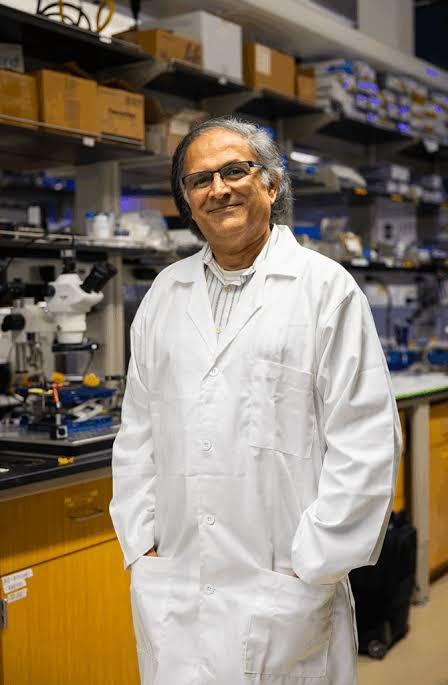

Who We Are
The people behind CF-ARIA, where the work happens, and how to get in touch.
CF-ARIA
CF-ARIA is an international group of researchers and clinicians dedicated to advancing cystic fibrosis (CF) diagnostics in regions of the world where CF is often under- or mis-diagnosed, using innovative micro- and nano-technologies.
The people involved
- Dr. Makarand (Mak) Paranjape Washington, DC, United States
- Dr. Shruti Paranjape Baltimore, Maryland, United States
- Pramila Menon D.Y. Patil Medical College, Hospital & Research Centre, Pimpri, Pune, India
- Christine Fleury Georgetown University Medical Center, Washington, DC, United States
The Paranjape Lab
Our patch is being developed at the Georgetown Nanoscience and Microtechnology Laboratory, known as GNuLab and also as the Paranjape Lab, in the Department of Physics at Georgetown University.1
The laboratory is a 3,300 square foot shared-use clean room in Regents Hall on the Georgetown University Main Campus, equipped for the fabrication and characterization of materials and electronic devices. It is open to researchers across the Main Campus and the Medical Center as well as to external researchers, who are assisted and trained in their work by Dr. Jasper Nijdam.1
Work in the laboratory spans three areas:1
- Condensed matter and materials science. Biodegradable polymers, two-dimensional nanomaterials, and atomic layer deposition.
- Biomedical devices. Glucose sensors, neural probes, and MRI contrast agents.
- Carbon nanotube sensors. Gas monitoring and diabetes.
Projects are carried out by postdoctoral fellows alongside graduate, undergraduate, and high school students.1 The equipment and techniques are the same ones used to produce integrated circuits.2
Dr. Makarand (Mak) Paranjape
About

GNuLab is directed by Dr. Makarand (Mak) Paranjape, Associate Professor in the Department of Physics, who joined the Georgetown faculty in 1998.21 He took his bachelor's, master's, and doctoral degrees in electrical engineering at the University of Alberta in Edmonton, finishing the PhD in 1993, and then held postdoctoral positions at Concordia University in Montreal, Simon Fraser University in Vancouver, and the University of California, Berkeley, alongside three years from 1995 consulting for the Istituto per la Ricerca Scientifica e Tecnologica in Trento, Italy.23 His father was a theoretical physicist who steered him toward engineering because he was the hands-on sort, which makes a physics department a slightly ironic place to end up.3
His research spans nanotechnology, including carbon nanotubes, electron beam lithography, and electrospinning, and biomedical engineering, including non-invasive biomolecular detection, microfluidic systems, and piezoelectric sensors, unified by the engineering of functional sensors that are fabricated in the laboratory itself.2 The turn toward biomedical work came during his second postdoc, in Vancouver, where a collaboration with a biology professor produced a microelectromechanical cantilever able to weigh a single cell.3 He is the inventor of a blood-free, pain-free transdermal patch for sensing glucose and holds the underlying intellectual property, US patent 6,887,202, on transdermal health monitoring and drug delivery.2
The patch comes out of that same line of work, and out of a collaboration closer to home: working with his wife, a cystic fibrosis physician at Johns Hopkins, Dr. Makarand (Mak) Paranjape filed a patent aimed at simplifying CF diagnosis in countries such as India and China and in parts of Africa.3 That is where this project's focus on settings without reliable access to sweat testing begins.
He has served on review panels for the National Science Foundation, the National Institutes of Health, the Natural Sciences and Engineering Research Council of Canada, the US Food and Drug Administration, the US Defense Threat Reduction Agency, and the Austrian Science Fund, and is an Associate Editor of Biomedical Microdevices and an editorial board member of Sensors and Materials.2 In 2025 he received an Office of Technology Commercialization Recognition Award from Georgetown.4 He teaches Intermediate Electricity and Magnetism Lab and Digital Electronics,2 and argues for bringing students into research early, on the view that "a person should not feel restricted or anxious about not having the appropriate background."3
Contact
Inquiries about CF-ARIA, including research collaboration and clinical input, can be sent to paranjam@georgetown.edu.
The laboratory maintains its own site at gnulab.georgetown.edu, including a full publication list.
Sources
Numbered markers in the text link to the entries below.
- Georgetown Nanoscience and Microtechnology Laboratory (GNuLab)
- Makarand Paranjape, faculty profile (Department of Physics, Georgetown University)
- Duncombe J. Q&A: Makarand Paranjape explores the microscale for medicine. Physics Today, September 30, 2025
- Georgetown Innovators Honored with Awards for Partnership, Entrepreneurship, Patents, Inventions (Office of Technology Commercialization, Georgetown University, 2025)
This page is compiled from Georgetown University's own published pages about the laboratory and its director. It has not been reviewed by the laboratory.